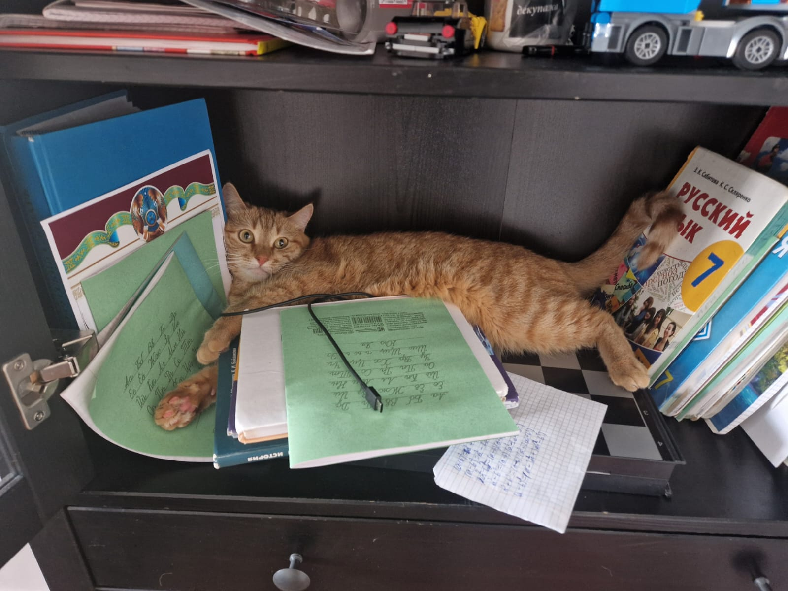

Eliseriya

Summary
Creative and determined young professional with extensive experience in hunting, being orange, and jumping around.
Education
- Bachelor of Science from University of Orange
Work Experience
- Representative of orange cats - OCD (Orange Cats Delegation)
2021-2024
- Delivered exceptional customer service tailored to a luxury retail environment, building strong client relationships and ensuring satisfaction.
- Handled high-value transactions with accuracy and discretion, while consistently meeting or exceeding sales targets.
- Collaborated with a small team to uphold the store’s reputation for exclusivity, professionalism, and attention to detail.
- Skakunya - Skakunya Co
2024-current
- Perform chemical reactions and synthesize materials according to established protocols.
- Conduct chemical and physical analyses of materials, including spectroscopy, microscopy, and mechanical testing.
- Prepare and characterize biomaterials, including hydrogels, scaffolds, and nanoparticles.
Skills
- Service and communication: 😺😸😸😸😸
- Safety regulations and management: 😸😸😸😸
- Teamwork: 😸😸😸😸
Awards and certifications
- The Best Orange Cat of the Year (2024)
Other